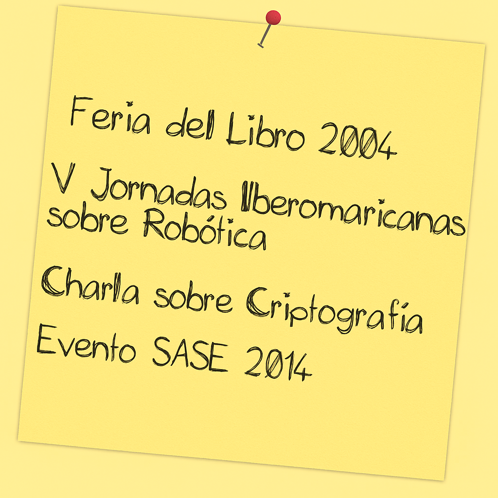
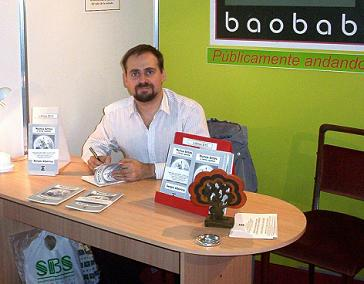
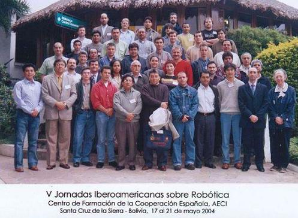
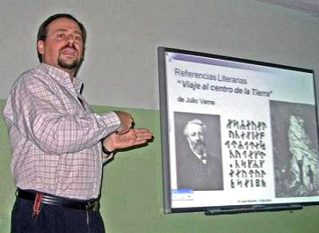
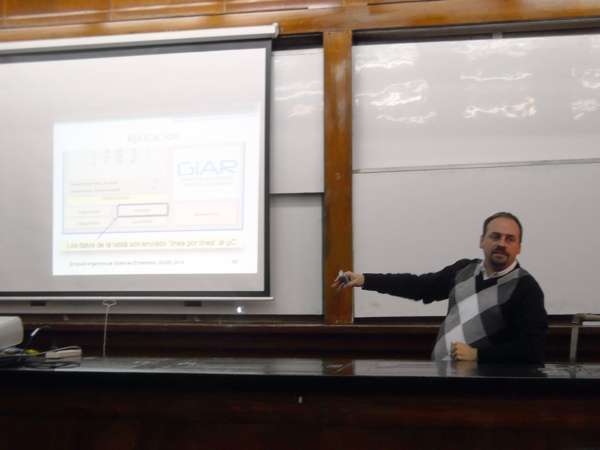

Eventos

- Feria del Libro 2004
 |
Presentación del libro "Nunca Antes y otros cuentos" en el Stand de Ediciones Baobab |
- V Jornadas Iberomaricanas sobre Robótica
Celebradas en Santa Cruz de la Sierra (Bolivia) en 2004. Exposición del paper: Variante en el algoritmo PID para evitar el uso de un generador de trayectoria trapezoidal Beca para la participación por parte de la Agencia Española de Cooperación Internacional para el Desarrollo (AECID)
|
 |
- Charla sobre Criptografía 2009
Charla sobre criptografía: códigos secretos, a cargo de Sergio Alberino, en la ET Nº 28 DE 10 "República Francesa "El Cuba" el 9 de Diciembre de 2009
 |
|
Participación como expositor en el SASE 2014, realizado en la Facultad de Ingeniería de la UBA. La presentación abordó el uso de herramientas libres para el desarrollo de sistemas embebidos, como parte del trabajo del grupo GIAR. El evento reunió a investigadores, docentes y profesionales de todo el país.
Más detalles en la nota publicada en la revista UTN.BA en Movimiento Nº 41: Leer artículo completo (PDF)